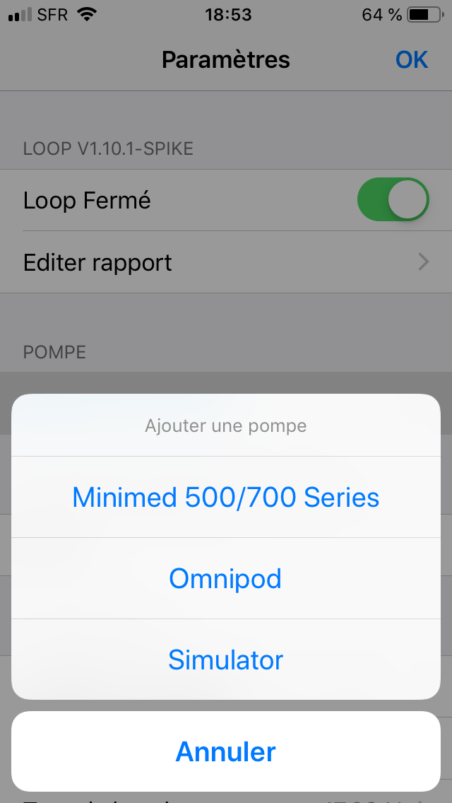

Configuration de l'app Loop
Cette section du guide de Loop, dans l'onglet "Configuration de l'app", donne toutes les informations importantes sur le processus qui permet de configurer proprement toutes les informations nécessaires. Vous allez devoir regarder toutes les étapes listées dans la table des matières sous cette page une par une. S'il vous plait, suivez jusqu'au bout chaque page pour être sûr de ne manquer aucune information importante concernant les réglages et le fonctionnement de Loop.
Ajouter une pompe
La première étape pour régler votre application Loop est de dire à Loop quelle pompe vous utilisez. Il y a des pages séparées pour configurer une pompe Medtronic (MDT) ou une pompe Omnipod Eros (alias "pods"). Cliquez sur l'une des pages pour arriver directement sur la page du guide correspondant.
Ajouter une pompe Medtronic Ajouter une pompe Omnipod

Ajouter un CGM
Vous aurez besoin d'ajouter une source CGM à votre app Loop. Si vous vous demandez quels CGMs sont supportés nativement par Loop, regardez ici. Le guide pour ajouter une source CGM se trouve ici

Paramétrisation
Il y a une section particulère des réglages de Loop qui s'appelle "Configuration". Dans cette section, vous allez rentrer plusieurs réglages avec lesquels vous êtes déjà familier comme les débits basaux, les ratios de glucides, et le facteur de sensibilité à l'insuline (alias facteur de correction). Il y a aussi des nouveaux termes que vous ne connaissez peut être pas comme la séléction du modèle d'insuline, le seuil de suspension ou les plages de correction. Assurez-vous de parcourir tout le guide de paramétrisation ici.

Services (optionel)
La dernière section des paramètres de votre app Loop, Services concerne des services optionels à qui vous pouvez envoyer vos données Loop. Le plus populaire de ces service est probablement votre site Nighscout ; mais il y a aussi des sites de traces qui peuvent stocker des informations sur les erreurs et messages de Loop. Tous ces services sont optionels ; ne pas utiliser ces services ne va pas affecter votre capacité à utiliser Loop.

Les affichages de Loop
Quand vous aurez fini avec la configuration de vos informations, vous allez aussi devoir vous familiarisez avec les différents affichages de Loop. Cette page vous aidera à comprendre ce que les icones, les graphes et les données représentent.
Le menu du RileyLink
Le RileyLink a des affichages et des commandes spécifiques qui fournissent des informations utiles à votre Loop. Regardez cette page pour en apprendre plus sur les différentes options disponibles.